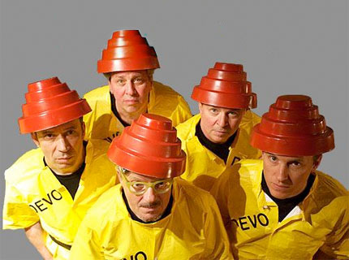
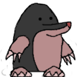
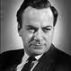
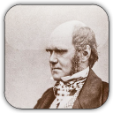
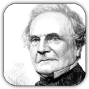
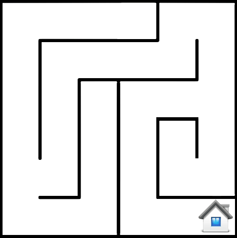

jQuery, CSS and HTML demos
Assignment 1 - Interactive Web Computing
Antony Magee
B00447842

Whack-a-mole
|

|
|
Famous Scientists
Richard Feynman
Richard Phillips Feynman (May 11, 1918 February 15,
1988) was an American physicist known for his work in the path integral
formulation of quantum mechanics, the theory of quantum electrodynamics and
the physics of the superfluidity of supercooled liquid helium, as well as in
particle physics (he proposed the parton model). For his contributions to the
development of quantum electrodynamics, Feynman, jointly with Julian
Schwinger and Sin-Itiro Tomonaga, received the Nobel Prize in Physics in
1965. 
Carl Sagan
Carl Edward Sagan (November 9, 1934 December 20, 1996)
was an American astronomer, astrophysicist, cosmologist, author, science
popularizer, and science communicator in the space and natural sciences.
During his lifetime, he published more than 600 scientific papers and popular
articles and was author, co-author, or editor of more than 20 books. In his
works, he advocated skeptical inquiry and the scientific method.
Charles Darwin
Charles Robert Darwin (12 February 1809 19 April 1882)
was an English naturalist. He established that all species of life have
descended over time from common ancestry, and proposed the scientific theory
that this branching pattern of evolution resulted from a process that he
called natural selection. He published his theory with compelling evidence
for evolution in his 1859 book On the Origin of Species, overcoming
scientific rejection of earlier concepts of transmutation of species.By the
1870s the scientific community and much of the general public accepted
evolution as a fact. However, many favoured competing explanations and it was
not until the emergence of the modern evolutionary synthesis from the 1930s
to the 1950s that a broad consensus developed that natural selection was the
basic mechanism of evolution. In modified form, Darwin's scientific discovery
is the unifying theory of the life sciences, explaining the diversity of
life. 
Isaac Newton
Sir Isaac Newton PRS (25 December 1642 20 March 1727
[NS: 4 January 1643 31 March 1727])[1] was an English
physicist, mathematician, astronomer, natural philosopher, alchemist, and
theologian, has been "considered by many to be the greatest and most
influential scientist who ever lived."[7] His monograph Philosophie Naturalis
Principia Mathematica, published in 1687, lays the foundations for most of
classical mechanics. In this work, Newton described universal gravitation and
the three laws of motion, which dominated the scientific view of the physical
universe for the next three centuries. Newton showed that the motions of
objects on Earth and of celestial bodies are governed by the same set of
natural laws, by demonstrating the consistency between Kepler's laws of
planetary motion and his theory of gravitation, thus removing the last doubts
about heliocentrism and advancing the Scientific Revolution.
Charles Babbage
Charles Babbage, FRS (26 December 1791 18 October 1871)
was an English mathematician, philosopher, inventor and mechanical engineer
who originated the concept of a programmable computer. Considered a "father
of the computer", Babbage is credited with inventing the first mechanical
computer that eventually led to more complex designs. Parts of his
uncompleted mechanisms are on display in the London Science Museum. In 1991,
a perfectly functioning difference engine was constructed from Babbage's
original plans. Built to tolerances achievable in the 19th century, the
success of the finished engine indicated that Babbage's machine would have
worked. Nine years later, the Science Museum completed the printer Babbage
had designed for the difference engine, an astonishingly complex device for
the 19th century. 
Animation
After having robbed the public blind with your banking ways tray and make it back home with your plunder!
